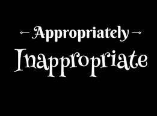

It’s True, All Paths Lead One Home. Some paths lead us in and through more pain than pleasure, but we ultimately ARE Freed from any and all ideas and limitations that have bound us to suffering of any kind. Whether freedom comes with our last breath in these physical forms, or whether we consciously choose to live freely in these physical forms dying to all that no longer serves us, matters not, for Truths That Set Us Free Are Here Always In All Ways.
Truth, the Universe, Life, Love, whatever you choose to call IT, IS For US, and we have the opportunity to use it For US, or not. No matter what road you travel, you will ultimately Know there truly IS no thing to fear. All the little niggling fears, doubts, and worries called by many names, such as greed, competition, anger, sadness, disappointment, despair, survival of the fittest, illness, disease, divorce, addiction, and all other forms of discord and dysfunction, can get our attention, or not. In my humble experience it has been the “or not”, more often than not, that has kept me on the path of destruction, distracted from Love, the Truth of Allness. And, as I have come to understand Love Now, It IS through Accepting, Allowing, and Peacefully Living As I Am, An Original Blessing, that I Am Freed Now more often than not.

I Am Here In The Loving, no matter what matter is before me, and to “others” it may seem as though I am selfish, ignorant, inappropriate, blasphemous, etc., but I Know what IS Best for Me as I turn my little “s” self-will over, and Willingly Allow Allness To Live Me, Myself, and I, I Am Guided. Yes, for better and for worse, Committed To Self, Love Guides Me Always. For this, and so much more, I Am Forever Grateful.
Unhooking from distractions of “other than”, Love, I find My Way Home. Every Step Of The Way Homeward Bound, bound to no thing, to Infinity and Beyond!
How Appropriately Inappropriate, Appropriating All Good In The Hood!